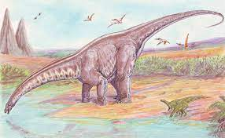
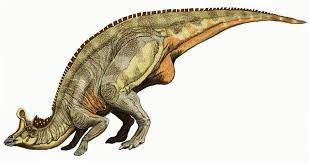
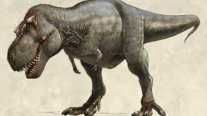
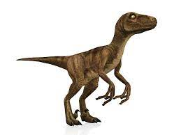

Diplodocus (gr. "doble viga"), también castellanizado diplodoco, es un género con tres especies conocidas de dinosaurios saurópodos diplodócidos, que vivieron a finales del período Jurásico, hace aproximadamente entre 155,7 y 145 millones de años, en el Kimmeridgiense y el Titoniense, en lo que hoy es Norteamérica.1 Los primeros fósiles fueron descubiertos en 1877 por S. W. Williston. Vivió en lo que es hoy el oeste de Norteamérica durante el período Jurásico Superior. El Diplodocus es uno de los dinosaurios más comunes de la parte superior de la Formación Morrison, una secuencia de sedimentos marinos y aluvionales depositados hace aproximadamente 152 millones de años. La Formación Morrison muestra un ambiente dominado por gigantescos saurópodos como Camarasaurus, Barosaurus, Apatosaurus y Brachiosaurus, además del Diplodocus.2 El Diplodocus está entre los dinosaurios más fácilmente identificables, con su forma clásica, cuello y cola largos, y cuatro patas robustas. Durante muchos años, era el dinosaurio más grande conocido. Su gran tamaño pudo haber sido un impedimento para los depredadores Allosaurus y Ceratosaurus, cuyos restos se han encontrado en los mismos estratos, lo que sugiere que coexistieron con el Diplodocus.El nombre genérico Diplodocus es la forma en neolatín derivada del griego διπλόος (diploös) «doble» y δοκός (dokos) «viga», en referencia a la forma de los huesos en chevrón a lo largo de la parte inferior de la cola. El término fue cuñado por Othniel Charles Marsh en 1878, pensando que esta forma de los huesos en chevróne era exclusiva de los Diplodocus.34 Posteriormente, sin embargo, fue descubierta en otros miembros de la familia de los diplodócidos y en saurópodos no diplodócidos como Mamenchisaurus
 triceratops  | apatosaurus inicio  | lambeosaurus  | tiranosaurus  | tiranosaurio |